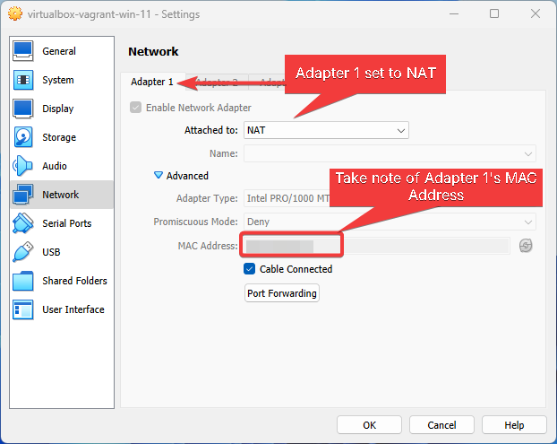
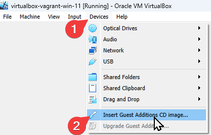

Vagrant.Export-Base Box#
Brief#
Convert the VM to a vagrant
.boxfileAdd the box file to vagrant
Test the box file with vagrant by provisioning it in a new directory
Prerequisites#
Procedure#
VM.ConvertTo-Box File#
Ensure-NAT is Configured Correctly

Install-Guest Additions

Invoke-Vagrant Package Command
cmd / shell#
vagrant package --base virtualbox-vagrant-win-11 --output win-11
PowerShell (Script) (Host Machine)#
param (
# Path to the virtual machine
[Parameter(Mandatory=$true)]
[string]$VMDir,
[Parameter(Mandatory=$true)]
[string]$BoxDir,
# Name of the virtual machine
[Parameter(Mandatory=$true)]
[string]$VMName,
# Name of the virtual machine provider
[Parameter(Mandatory=$true)]
[string]$VMProvider
)
function Get-VMWarePath {
@(
[System.Environment]::GetFolderPath('ProgramFiles'),
[System.Environment]::GetFolderPath('ProgramFilesX86')
) | ForEach-Object {
$ConditionalReturnValue = Join-Path $_ 'VMware' 'VMware Workstation'
if ($ConditionalReturnValue | Test-Path -ErrorAction SilentlyContinue) { return $ConditionalReturnValue }
}
}
$VMWarePath = Get-VMWarePath
$VMDiskManager = ($VMWarePath) ? $(Join-Path $VMWarePath 'vmware-vdiskmanager.exe') : $null
$VMDK = "$VMDir/$VMName.vmdk"
& "$VMDiskManager" -d "$VMDK"
& "$VMDiskManager" -k "$VMDK"
$MetaData = @"
{
"provider": "$VMProvider"
}
"@
$Files = Get-ChildItem -Path $VMDir
$FilesToArchive = @()
foreach ($File in $Files) {
$Extension = $File.Extension.TrimStart('.')
if ($Extension -in @('nvram', 'vmsd', 'vmx', 'vmxf', 'vmdk') -or $File.Name -eq 'metadata.json') {
$FilesToArchive += (Resolve-Path -Path $File.FullName -RelativeBasePath $VMDir -Relative).Substring(2)
}
}
Set-Content -Path (Join-Path $VMDir 'metadata.json') -Value $MetaData -Force
tar cvzf (Join-Path $BoxDir "$VMName.box") --directory=$VMDir $FilesToArchive
PowerShell (Usage) (Host Machine)#
& (Join-Path '.' 'script.ps1') -VMDir (Join-Path 'E:' 'assets' 'vms' 'win-11') -BoxDir (Join-Path 'E:' 'assets' 'vagrant' 'boxes') -VMName 'win-11' -VMProvider 'vmware_desktop'